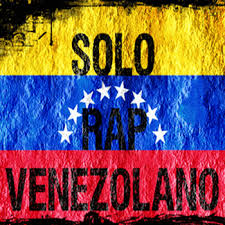
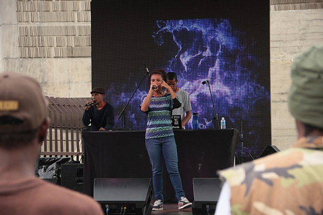
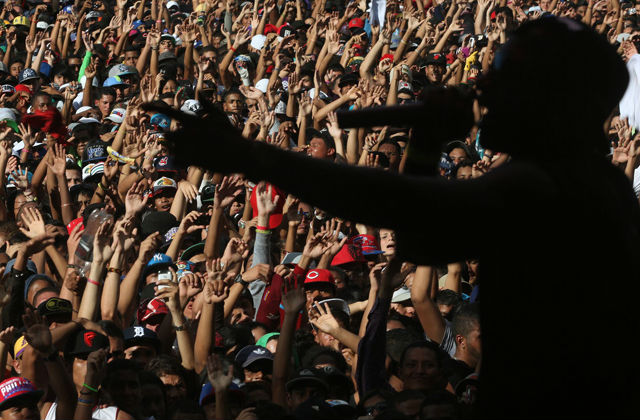

Historia del rap en Venezuela

El desarrollo del rap en Venezuela como movimiento fue sin dudas uno de los más tardíos en Latinoamérica, aunque sin embargo registra la que para muchos es la primera grabación de rap español: el tema “Cotorra Criolla”, cantado por el humorista y actor Perucho Conde en 1980 y que contiene una letra de protesta.
Sin embargo, recién sobre mediados de la década de 1990 el hip hop, y luego el rap, comienzan a tomar fuerza en el país ubicado sobre el norte del continente sudamericano, por lo menos como un movimiento mínimamente organizado.
Según los especialistas, es el grupo de musica La Corte el primer representante fiel del estilo.
Hasta ese momento, existían otras bandas que incluían canciones rapeadas, pero que en realidad no seguían el estilo de manera real y coherente.
Los grupos de musica que comenzaron a aparecer en la escena venezolana representaban mayormente la tendencia gangsta rap, como por ejemplo Guerrilla Seca, Vagos y Maleantes (ahora 3 Dueños), pertenecientes al colectivo Venezuela Subterránea.
Para esa fecha se fue gestando un movimiento underground de importancia, mayormente en ciudades como Caracas, Maracay, San Antonio, Guarenas y Maracaibo. Por supuesto, las tendencias raperas más fuertes se registraban en la capital venezolana y sus regiones aledañas.
En la actualidad, en el rap venezolano destacan grupos como Santos Negros, Ido Family, Fundamentors, Cuarto Poder, Black Ghetto y Realengos, entre otros.
El hip hop en venezuela

El hip hop, teniendo raíces separadas en los sesenta, surge como cultura en los años setenta, en los barrios marginales de Nueva York, generalmente hispanos o negros. En zonas como Queen, Brooklyn y Bronx, la cultura hip hop es en donde se empieza a asentar como tal.
El término de cultura hip hop, se dio cuando se vincularon los cuatro elementos que hoy y siempre lo compusieron: el rap mediante los Mcs y Djs, el graffiti con los escritores y el Breakdance con los breakers o b-boys. El hip hop no es únicamente el rap, sino que el rap es una de las disciplinas del hip hop.
Luego de establecerse, el hip hop comienza a expandirse hacia otros lugares del mundo. En la década de los ochenta y principios de los noventa, es cuando se plantan las semillas germinales de la cultura hip hop fuera de Estados Unidos. Mediante películas como “Beat Street”, “Breakdance”, “Wild Style”, “Flash Dance”, “Breakin´” y “Electric Boogaloo”, el hip hop se extendió por el mundo, con el breakdance a la cabeza. España, Chile, México y Venezuela, fueron los lugares en donde más repercutió.
Hip hop a la Venezuela

Con la llegada del hip hop a Venezuela, se dio una particularidad que no es propia únicamente de Venezuela, sino que se dio en diferentes partes del planeta.
El hip hop, es una corriente artística que nació en determinado lugar, y tomó forma de acuerdo a lo que ocurría allí. Con su expansión y llegada a otros países, inevitablemente el hip hop se vio involucrado a costumbres, formas y ritmos que no le eran propios.
En Venezuela ocurrió esto. El hip hop se transformó, siendo fusionado con ritmos propios, generando una escuela propia y única. Actualmente, los grupos destacados de hip hop en Venezuela son Canserbero, Nuestro Sindicato, Dardos-Graff, SN Crew, Pneuma Copla, Ache MC, Cijey, Hip Hopstyle, Gabylonia, TMS, Bib Flow, K-lle Real, A & B Flow.